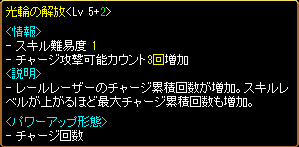
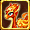
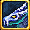
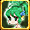
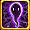

メニュー
トップ >> スキル >> ミニペット
手順
まとめ
ミニペット一覧
手順
まとめ
ミニペット合成システム
・合成には非活性にしたLv100以上のミニペット2体が必要。
・保有期限の切れたミニペットでも使用できる。
・同じ属性のミニペット同士は合成できない。
・生贄にしたミニペットは消滅する。
2次進化した合成ミニペット
・ベースにしたミニペットの属性・系統・スキル・覚醒の種/果実の有無が引き継がれる。
・ベースにしたミニペットの全てのスキルと、「ミニペット合成可能スキル」と表示された生贄のスキルの中からランダムで2個と、新しい専用のスキル2個が付加される。
・スキル振りは初期化される。
・進化ボーナスは2倍になる。
精霊型 ペットスキルダメージ +50％ → +100％
自然型 ペットスキル発動確率 +0.10％ → +0.20％
神霊型 ペットスキルレベル +1 → +2
・残り保有時間は、ベースと生贄の時間が合算される。
・最大Lv150まで上げることができる。
・攻撃力が300増加する。
・生贄として合成に使用することはできないが、ベースとして合成し直すことは可能。
・アブソーブ・チェーンは使用不可。
・ミニペットスキル再配分巻物を使用してスキル振りを初期化することはできるが、生贄のスキルの種類は変わらない。
・ミニペット進化の巻物を使用して系統を変更し、スキルを初期化することはできるが、生贄のスキルの種類は変わらない。
・最大Lv150になるため、残余ポイントボーナススキル（エアロビクスなど）はLv150にならないと習得できない。
突然変異体
・合成時に低確率で、誕生する。
・ミニペット変異促進剤を使用すると、突然変異体が誕生する確率が10％ほど増加する。
・ミニペット変異促進剤を使用して突然変異体が誕生した場合、合成ミニペットと突然変異体の2体を入手できるが、使用せずに突然変異体が誕生した場合は、どちらか1体のみを選択で入手となる。
・ベースや生贄の種類に関わらず、全く新しいスキルを持つ。
・精霊/自然/神霊の系統が異なってもスキルの種類は全て同じ。
・全てのスキルに前提スキルがないため、必要なスキルだけを自由に習得することができる。
・進化ボーナスは2倍になる。
・ミニペット変異促進剤を使用して誕生した突然変異体の残り保有時間は、30日。
・ミニペット変異促進剤を使用せずに誕生した突然変異体の残り保有時間は、ベースと生贄の時間が合算される。
・突然変異体は2次進化（合成）不可。
・アブソーブ・チェーンは使用不可。
・ミニペットスキル再配分巻物を使用して、スキル振りを初期化できる。
・ミニペット進化の巻物を使用して系統を変更し、スキルを初期化できる。
スキルの詳細は ⇒ ミニペットスキル ミニペット合成スキル
[参考]ミニペット合成システム(公式サイト)
ミニペット合成システム
ミニペットを合成することで、さらに進化した2次進化ミニペットを入手する事が出来ます。
また、Lv30未満の基本型ミニペットのみに使用できる、ミニペットのレベルを一気に100まで
上昇させてくれる アイテム「成長の呪文書」をNPC「クロネ」より入手できます。
手順
まとめ
ミニペット一覧
手順
 |
神聖都市アウグスタ クロネ（62.103）にて、 13～23時の間にLv100以上のキャラクターでのみ ミニペット合成を行うことができる。 |
 |
ミニペットを合成して進化させたいです を選択 合成には非活性にしたLv100のミニペット2体が 必要。 期限切れでも合成できる。 同じ属性同士は合成できない。 |
| チャオリン×ゴオリン の場合 左にベース 光の神霊型 チャオリン 右に生贄 闇の神霊型 ゴオリン 下に ミニペット変異促進剤 をセット |
|
 |
ミニペット変異促進剤は課金アイテム。 使用しなくても合成はできるが、使用すると突然変異体の誕生確率が10％ほど増加。 またミニペット変異促進剤を使用して突然変異体が誕生した場合、合成ミニペットと突然変異体の2体を入手できるが、使用せずに突然変異体が誕生した場合は、どちらか1体のみ選択で入手となる。 |
| 合成開始 |
|
 |
合成完了 光の神霊型 チャオリンが2次進化して 合成ミニペット ヌウリが誕生。 生贄にしたゴオリンは消滅する。 |
| 光の神霊型 2次進化 ヌウリ |
|
 |
2次進化した合成ミニペットはベースの属性・系統・スキル・覚醒の果実の有無を引き継ぐ。 生贄のスキルは「ミニペット合成可能スキル」と表示されている中からランダムで2個付加される。 また、専用の新しいスキル2個が付加される。 スキル振りは初期化される。 進化ボーナスは2倍になる。 残り保有時間は合算される。 最大Lv150まで上げることができる。 攻撃力が300増加する。 アブソーブ・チェーンは使用不可。 チャオリンの 属性 = 光 系統 = 神霊 全てのスキル 覚醒の果実 = 無 が引き継がれ、 ゴオリンのミニ装備バッジとロックスミスマスター、新たにレールレーザーExと光輪の解放が付加。 |
| 光の神霊型 2次進化 ヌウリ専用の新しいスキル |
|
|  |
光の神霊型 2次進化 ヌウリ専用の新しいスキル |
| 2次進化した合成ミニペットは生贄として合成に使用することはできないが、ベースとして合成し直すことは可能。 ヌウリ×ゴオリン の場合 左にベース 光の神霊型 2次進化 ヌウリ 右に生贄 闇の神霊型 ゴオリン 下に ミニペット変異促進剤 をセット |
|
|
合成完了 ヌウリの形態は変わらず、 生贄にしたゴオリンは消滅する。 |
 |
生贄のスキル2個が変更になり、ゴオリンのミニ装備バッジと闇のカリスマが付加。 残り保有時間はさらに合算される。 ゴオリンの合成可能スキル ・ 闇のカリスマ ・ チャージング[Pet] ・ ロックスミスマスター ・ エンブレスブラックパール ・ ミニ装備バッジ ・ ゴミルの無限迷宮 の6個の中からランダムで2個が生贄のスキルとして付加される。 希望するスキルが付くまで、合成を繰り返し行うことができる。 |
 |
ゴオリン×チャオリン の場合 左にベース 闇の神霊型 ゴオリン 右に生贄 光の神霊型 チャオリン 下に ミニペット変異促進剤 をセット |
| 合成完了 闇の神霊型 ゴオリンが2次進化して 合成ミニペット ダウリが誕生。 |
|
| さらに突然変異体 陰も同時に誕生。 ミニペット変異促進剤を使用しているため、 合成ミニペットと突然変異体の2体を同時に入手。 生贄にしたチャオリンは消滅する。 |
|
| 闇の神霊型 2次進化 ダウリ 突然変異体 陰 |
|
 |
闇の神霊型 2次進化 ダウリ ゴオリンの 属性 = 闇 系統 = 神霊 全てのスキル 覚醒の果実 = 無 が引き継がれ、 チャオリンのチャミルの閃光とアドベンチャーラー、新たにヴォルテックスフリングExと奈落の解放が付加。 チャオリンの合成可能スキル ・ 光の知識 ・ リザレクション[Pet] ・ アドベンチャーラー ・ エンブレスパール ・ ミニディバインアーチ ・ チャミルの閃光 の6個の中からランダムで2個が生贄のスキルとして付加される。 |
| 闇の神霊型 2次進化 ダウリ専用の新しいスキル |
|
| 闇の神霊型 2次進化 ダウリ専用の新しいスキル |
|
 |
突然変異体 陰 ベースや生贄の種類に関わらず 全く新しいスキルを持つ。 精霊/自然/神霊の系統が異なっても スキルの種類は全て同じ。 全てのスキルに前提スキルがないため、必要なスキルだけを自由に習得することができる。 進化ボーナスは2倍になる。 ミニペット変異促進剤を使用しているため、残り保有時間は合算されず、誕生した日から30日。 突然変異体は2次進化（合成）不可。 アブソーブ・チェーンも不可。 |
|
また、 ミニペットの記憶が刻まれた成長の呪文書が欲しいです を選択すると |
| 金のインゴット 5本 炎の石 3個 |
|
| で、成長の呪文書と交換できる。 |
|
 |
成長の呪文書を進化前のミニペットに使用すると、各系統のLv100に進化させることができる。 進化前のミニペットLv30未満にのみ使用可能。 |
まとめ
ミニペット合成システム
・合成には非活性にしたLv100以上のミニペット2体が必要。
・保有期限の切れたミニペットでも使用できる。
・同じ属性のミニペット同士は合成できない。
・生贄にしたミニペットは消滅する。
2次進化した合成ミニペット
・ベースにしたミニペットの属性・系統・スキル・覚醒の種/果実の有無が引き継がれる。
・ベースにしたミニペットの全てのスキルと、「ミニペット合成可能スキル」と表示された生贄のスキルの中からランダムで2個と、新しい専用のスキル2個が付加される。
・スキル振りは初期化される。
・進化ボーナスは2倍になる。
精霊型 ペットスキルダメージ +50％ → +100％
自然型 ペットスキル発動確率 +0.10％ → +0.20％
神霊型 ペットスキルレベル +1 → +2
・残り保有時間は、ベースと生贄の時間が合算される。
・最大Lv150まで上げることができる。
・攻撃力が300増加する。
・生贄として合成に使用することはできないが、ベースとして合成し直すことは可能。
・アブソーブ・チェーンは使用不可。
・ミニペットスキル再配分巻物を使用してスキル振りを初期化することはできるが、生贄のスキルの種類は変わらない。
・ミニペット進化の巻物を使用して系統を変更し、スキルを初期化することはできるが、生贄のスキルの種類は変わらない。
・最大Lv150になるため、残余ポイントボーナススキル（エアロビクスなど）はLv150にならないと習得できない。
突然変異体
・合成時に低確率で、誕生する。
・ミニペット変異促進剤を使用すると、突然変異体が誕生する確率が10％ほど増加する。
・ミニペット変異促進剤を使用して突然変異体が誕生した場合、合成ミニペットと突然変異体の2体を入手できるが、使用せずに突然変異体が誕生した場合は、どちらか1体のみを選択で入手となる。
・ベースや生贄の種類に関わらず、全く新しいスキルを持つ。
・精霊/自然/神霊の系統が異なってもスキルの種類は全て同じ。
・全てのスキルに前提スキルがないため、必要なスキルだけを自由に習得することができる。
・進化ボーナスは2倍になる。
・ミニペット変異促進剤を使用して誕生した突然変異体の残り保有時間は、30日。
・ミニペット変異促進剤を使用せずに誕生した突然変異体の残り保有時間は、ベースと生贄の時間が合算される。
・突然変異体は2次進化（合成）不可。
・アブソーブ・チェーンは使用不可。
・ミニペットスキル再配分巻物を使用して、スキル振りを初期化できる。
・ミニペット進化の巻物を使用して系統を変更し、スキルを初期化できる。
| ミニペット一覧 | |||||||
|---|---|---|---|---|---|---|---|
| 基本型 | 1次進化 | 2次進化 | |||||
| 精霊型 | 自然型 | 神霊型 | 精霊型 | 自然型 | 神霊型 | ||
| 火 | 火の霊 |
サラマンダー |
火 |
ハオリン |
ケルベロス |
業火 |
 ヴァウリ |
| 水 | 水の霊 |
ウンディーネ |
水 |
 ミオリン |
セイレーン |
爆水 |
ムウリ |
| 風 | 風の霊 |
シルフィー |
風 |
スオリン |
ハーピー |
烈風 |
 パウリ |
| 大地 | 大地の霊 |
ノーム |
土 |
ダオリン |
カトブレパス |
大地 |
ゴウリ |
| 光 | 光の霊 |
ウィスプー |
光 |
チャオリン |
ピクシー |
雷光 |
ヌウリ |
| 闇 |  闇の霊 |
シャドウ |
闇 |
ゴオリン |
アビス |
黒闇 |
ダウリ |
| 幻 | 幻 |
イリュージョン |
幻想 |
ザオリン |
ファントム |
幻影 |
アウリ |
| 突然変異 | - | 陽 陰 |
- | ||||
スキルの詳細は ⇒ ミニペットスキル ミニペット合成スキル
[参考]ミニペット合成システム(公式サイト)